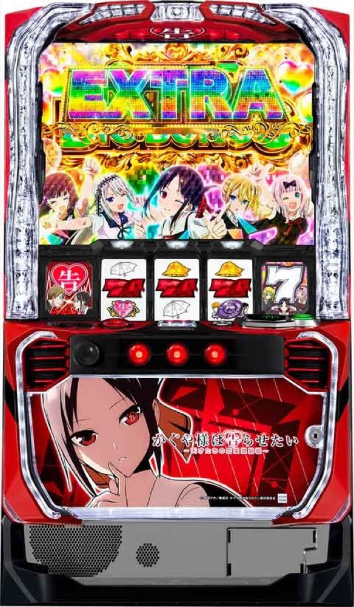

Lパチスロ かぐや様は告らせたい
15G＋αの告らせたいチャレンジから、高純増BONUSの1G連へ。
- 導入
- 2024年9月
- メーカー
- SANKYO
- 分類
- パチスロ
主要スペック
設定別BONUS初当りを使い、15G＋αのCZ、3種類の疑似BONUS、1G連、約100Gの引き戻し、奇跡的相性マリアージュMODEとEXTRA BONUSを実機順に体験できます。
- CZは15G＋α・成功期待度約58%
- BIG／SUPER BIGの1G連期待度約45%
- 5連目以降のBONUSループ期待度約80%
Lパチスロ かぐや様は告らせたいの見どころと計算条件
設定別BONUS初当りを使い、15G＋αのCZ、3種類の疑似BONUS、1G連、約100Gの引き戻し、奇跡的相性マリアージュMODEとEXTRA BONUSを実機順に体験できます。
スマスロ かぐや様を数字で早分かり
告らせたいチャレンジからKAGUYA BONUS、EXTRA BONUSまでの流れと、設定ごとの結果差を固定レートで比較できます。
30秒で分かるスマスロ かぐや様
15G＋αのCZを突破し、純増約9.0枚/GのBONUSを1G連と約100Gの引き戻しで重ねる高純増タイプです。5連目以降の約80%ループとEXTRA BONUSで結果が大きく変わります。
こんな遊び方に向いている
- CZからBONUSまでをPUSHで順番に体験したい
- REG・BIG・SUPER BIGの獲得差を比べたい
- 1G連と100G引き戻しの連チャンを見たい
遊ぶ前に確認したいこと
- 1G連時はBIG以上として抽選
- 5連目以降は公開されている約80%ループを反映
- EXTRAの初期G数振り分けなど非公表部分は代表値
通常時から告らせたいチャレンジへ
通常時はチャンス目の規定回数、規定ゲーム数、強チャンス目などから前兆『恋愛頭脳戦』を経てCZを目指します。CZは15G＋αで、小役や2択成功から7図柄停止・一発告知を狙うゲーム性です。
シミュレーターでは設定別BONUS初当りを維持しつつ、CZ15Gを最後まで進め、PUSHで約58%の当落を開きます。
3種類の疑似BONUSと1G連
REGは平均約83枚、BIGは30G・約270枚、SUPER BIGは54G・約490枚。BIG以上は消化中に約45%で1G連ストックを抽選し、1G連時はBIG以上が濃厚です。
1G連の一部で白銀覚醒、ガチきゅんPUSH、チカブレイクを表示します。特化ゾーンは次回BONUSストック数をPUSHまで伏せて見せます。
約100Gの引き戻しと5連目以降
1G連非当選時は約100Gの引き戻しチャンスへ。成功期待度は通常約25%、5連目以降は約50%で、1G連と合わせたBONUSループ期待度は通常約60%、5連目以降は約80%です。
引き戻し成功時もBIG以上へ進みます。終了時は100Gを最後までカウントして、ループ終了を明確に表示します。
奇跡的相性MODEとEXTRA BONUS
ボーナス終了後の一部やエンディング後は、32G以内のSUPER BIGが濃厚となる奇跡的相性マリアージュMODEへ移行します。終了後は約80%のBONUSループに期待できます。
BIG／SUPER BIGの一部でEXTRA BONUSへ昇格。50Gまたは100Gを約80%で上乗せ決定し、平均期待枚数約3450枚の上位ボーナスとして専用表示します。
固定レートと簡易化する範囲
- 約31G/50枚・1,000円46枚貸し・5.2枚交換で固定
- 内部モード、全小役、CZ再セット条件は代表抽選へ簡略化
- 非公表のBONUS初回比率・特化ゾーン比率は体験用代表値
- 19,000枚到達時はコンプリート表示
平均Gと投資目安の計算
掲載するKAGUYA BONUS初当り約1/362は設定1基準です。当サイトでは50枚あたり31G、1,000円46枚貸しの固定条件から、設定1基準の平均投資目安を約12,700円と計算します。
シミュレーターでは設定1〜6を均等抽選します。設定1〜6で公開されている初当り値を個別に使います。公開されていない特化ゾーン・上位到達率の設定差は加えません。 換金は5.2枚交換で固定し、結果とランキングに設定を表示します。
シミュレーション結果の見方
当るまで告らせたいチャレンジ・KAGUYA BONUSまでのゲーム数
設定設定1・2・3・4・5・6から抽選された今回の設定
上位到達奇跡的相性マリアージュMODEとEXTRA BONUSへの到達
最終収支差枚と5.2枚交換の収支目安
結果は自動で「マイ記録」に保存され、同じ機種を何回試したか、最高収支、勝率をあとから確認できます。
簡易シミュレーターについて
告らせたいチャレンジ・KAGUYA BONUS・EXTRA BONUSの流れを固定条件で体験できます。JavaScriptを有効にすると、この位置にシミュレーター、演出、マイ記録、機種別ランキングが表示されます。
結果は娯楽・確率理解のための参考表示です。金銭的価値や交換価値はなく、実際の勝敗や収支を保証しません。18歳未満の方の利用はお控えください。
スマスロ かぐや様のよくある質問
スマスロ かぐや様はどんな台？
設定別BONUS初当りを使い、15G＋αのCZ、3種類の疑似BONUS、1G連、約100Gの引き戻し、奇跡的相性マリアージュMODEとEXTRA BONUSを実機順に体験できます。 CZは15G＋α・成功期待度約58%が主な確認ポイントです。
スマスロ かぐや様の平均投資目安は？
設定1基準のKAGUYA BONUS初当り約1/362と、50枚あたり31G・46枚貸しの固定条件から、平均12,700円を目安として表示します。実際の設定や遊技状況で結果は変わります。
設定とゲームの流れはどう抽選する？
開始時に設定1・2・3・4・5・6から1つを均等抽選し、告らせたいチャレンジ、KAGUYA BONUS、奇跡的相性マリアージュMODE、EXTRA BONUSの順で到達を判定します。設定は最終結果とランキングに表示します。
収支はどう計算する？
1,000円46枚貸し・5.2枚交換の固定条件で投資、換金、収支目安を計算します。実店舗の再プレイ、持ちメダル、端数処理は含みません。